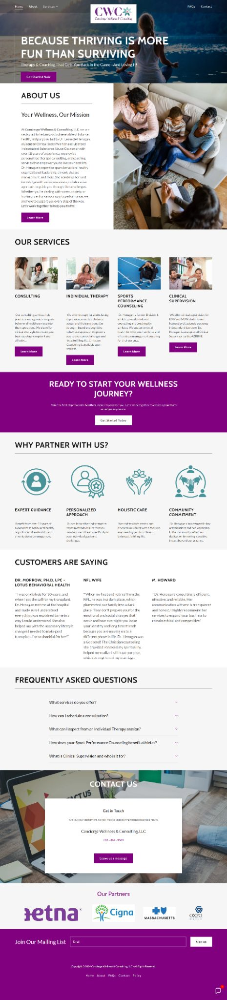

The challenge

← Back to Work
Wellness · Multi-service
Concierge Wellness & Consulting
When one practice offers several kinds of help, the website has to make those choices feel simpler, not heavier.
Platform usedGoDaddy Website Builder
Project typeWellness · Multi-service
The story behind the build
More services should create more ways to help, not more confusion.
Concierge Wellness & Consulting had several services that needed to live together. The challenge was making those choices feel simpler for the person arriving on the site, rather than forcing them to understand the whole business before knowing where they belonged.
I grouped related services into clearer paths, explained the differences before the contact decision and placed trust close to the moments where a visitor would naturally hesitate.
The finished journey keeps the calmer tone expected from a wellness brand while giving people a clearer route to the service that fits them.
What I changed
- Group related services into clearer paths.
- Explain the difference between options before asking for contact.
- Place trust and credibility close to decision points.
- Keep the page calm enough for a wellness audience while maintaining clear actions.
Where it ended